甲骨文从止示聲。象意趕往祭祀的場所，即趕廟會。止或加三點，指腳步紛紛之意。
由于廟會人多，也是物資交易的地方。故引申指集市。shì，《爾雅·釋詁》：“貿賈，市也。”《廣韻》：“買也。”《古史考》：“神農作市。”《易·繫辭》：“日中為市，致天下之民，聚天下之貨，交易而退，各得其所。”《周禮·地官》：“五十里有市。”“大市，日昃而市，百旅為主。朝市朝時而市，商賈為主。夕市夕時而市，販夫販婦為主。” 由買賣之所，引申指城鎮。
可能是因“市”的指趕廟會的本義早已不用，周以後，“示”不斷發生訛變。 西周晚期金文作，“示”訛作“丂”。《張世超·金文形義通解》以其“當為从兮止聲字，从兮，蓋取其喧嘩之意。” 戰國文字“示”演變成“巾”，即“
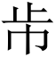
”，《集韻》：“會，古作，亦作㣛。”以其為“會”的古體，說明仍保留著集市之意。 《說文》依據小篆，釋為：“買賣所之也。市有垣，从冂；从乛，乛，古文及，象物相及也；之省聲。時止切。”析形不確。 戰國文字或寫作，上面的“止”成“屮”，則混同“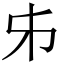
”（具體見119《巾部》）。另或跟形近字“巿、帀、寺”相訛混。s「失收」取「收」：市為廟會所聚，人貨收聚而交易（推）。
①指市貌，表示熱鬧、眾多
| 字 | 读音 | 类属 | 取义落点 |
|---|---|---|---|
| 柿（枾） | shì | 木 | shì《說文》：“枾，赤實果。从木市聲。鉏裡切。”《爾雅翼》：“枾有七絕：一壽，二多陰，三無鳥巢，四無蟲蠹，五霜葉可玩，六佳實可啖，七落葉肥大可以臨書。”柿樹。其葉經霜後落盡，但紅紅的果子仍挂在枝頭，其狀頗為壯觀。故从“市”。 |
| （遞递） | dì | 辵 | dì《集韻》：“遞，或作递。俗作逓。”更迭。 |
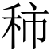 （秭） | zǐ | 禾 | zǐ《龍龕》：“將幾反。千億也。又㷌（歸），縣名。”《漢典》：“同秭。” |
②象意字，含眾多義
| 字 | 读音 | 类属 | 取义落点 |
|---|---|---|---|
| 鬧（ 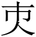 閙闹） | nào | 鬥 | nào《新附》：“不静也。从市、鬥。”《廣韻》：“，不靜。又猥也，擾也。鬧，上同。”《集韻》：“或作。”噪雜、擾亂、爭吵、繁茂、濃盛。 |
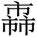 | nǎo | 巾 | nǎo《字彙補》：“鬧也。” |
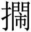 | nào | 手 | nào：扛。晉語。 |
③形近字“、帀、寺、巿”之訛
| 字 | 读音 | 类属 | 取义落点 |
|---|---|---|---|
| 姉（姊） | zǐ | 女 | zǐ《正字通》：“女兄也。《爾雅》：‘男子謂女子先生曰姉。’《詩· 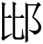 風》：‘問我諸姑，遂及伯姉。’今作姊……” |
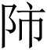 （師） | shī | 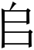 | shī《字彙補》：“與師同。” |
| （砸 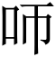 ） | zā | 口 | zā《龍龕》：“、砸、，三俗；，正。子荅反。入口也。”用唇吸吮，或以指沾染而吸。 |
| 鈰（ 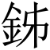 ） | shì | 金 | shì《集韻》：“劍名。”qí，《正字通》：“字之譌。”今指稀土元素鈰（Ce）。 |
| （恃㤄） | shì | 心 | shì《集韻》：“恃，《說文》：‘賴也。’或从市。”應為“寺”之訛。pèi，《龍龕》：“，俗；㤄，正。芳廢反。怒也。” |